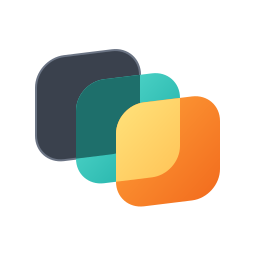

谁在花你的 token
每张卡是一个 Agent。条的长度是这段时间读进模型的总 token，深色部分是按原价算的（没命中缓存）。
逐项对比
点表头排序，点一行看详情。
工具定义重量
Agent 每次请求都会把自己的工具清单重发一遍，这部分也按 token 计费。

正在读取…
同一个网关后面，每个 Agent 工具读了多少 token、命中多少缓存、失败多少次。
每张卡是一个 Agent。条的长度是这段时间读进模型的总 token，深色部分是按原价算的（没命中缓存）。
点表头排序，点一行看详情。
Agent 每次请求都会把自己的工具清单重发一遍，这部分也按 token 计费。